MoveAtlas#
The open atlas of movement data, human and animal: one API over the movement-disorders corpus. 170 catalogued datasets (159 human, 11 animal); 302,463 harmonized records from 32,668 subjects and 40,357 hours of signal across six canonical families (pose, IMU, EMG, force plates, silhouette, EEG), with patient-level evaluation splits. Every count on this page is computed from the registry at build time. MoveAtlas exists because the hyperkinetic disorders - dystonia, tremor, chorea, myoclonus, tics, athetosis, ballismus, stereotypies - are where open data is scarcest: the atlas documents every gap it could not fill (the coverage matrix’s empty cells are findings, not omissions), and contributes its own: CODY, the public dystonia-centred release of adult and pediatric hyperkinetic pose data (10.5281/zenodo.22232609). The catalogue reaches further than the six harmonized families: invasive LFP and ECoG recordings, structural MRI cohorts, brain histology and transcriptomics, genetics panels and clinical scales are catalogued with their own cards and access routes, and a translational animal lane (mouse, rat and macaque models of the same disorders) is kept strictly separate from the human clinical axes.
{kind=link}
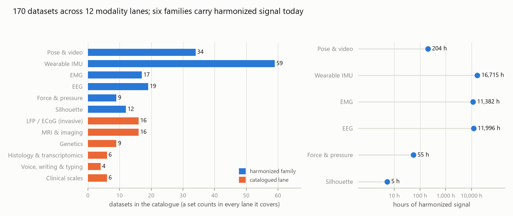
{kind=link}
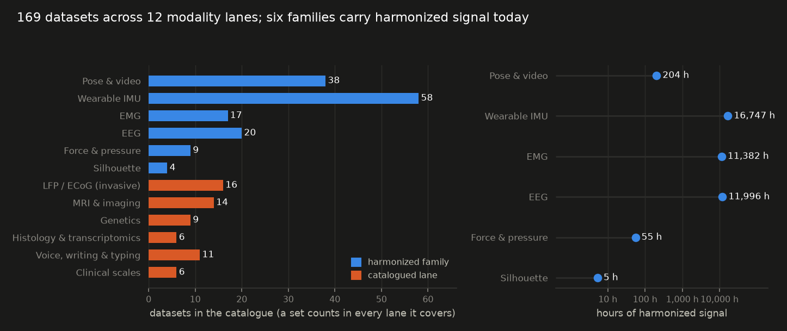
Six harmonized families#
Every thumbnail below is a real record from the corpus; every count is measured from the canonical manifests at build time.
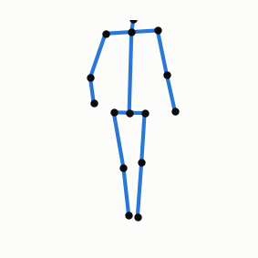
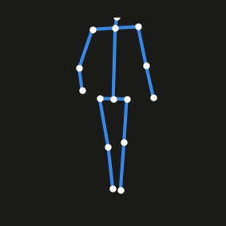
3D mocap and video keypoints on one canonical 15-joint skeleton. Gait analysis, action recognition, clinical video.
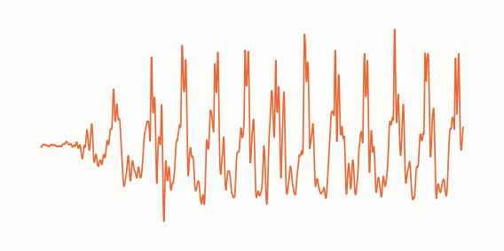
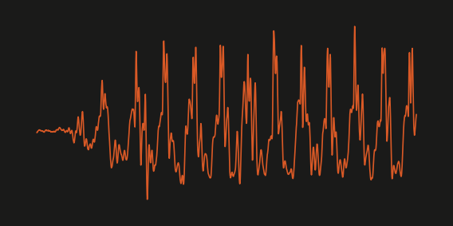
Wearable inertial sensing on a 14-location body grid; protocol trials and multi-day free living.
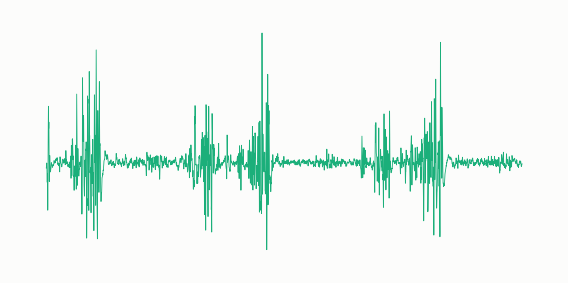
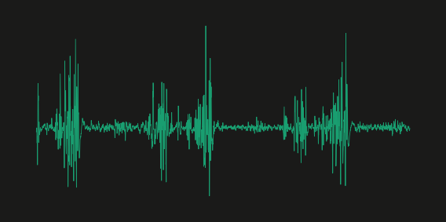
Surface electromyography with named muscles, never guessed. Locomotion, tremor and sleep protocols.
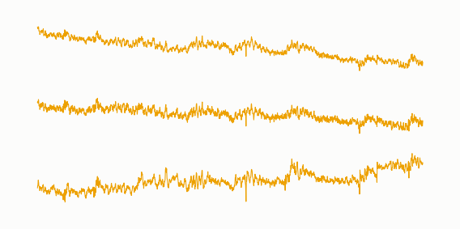
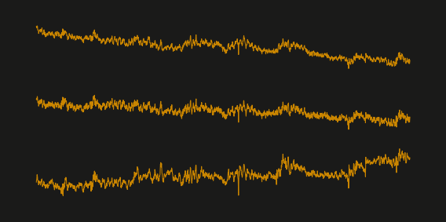
Scalp EEG during movement and sleep; the invasive LFP/ECoG lane joins this contract at its own pass.
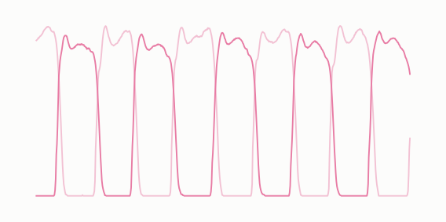
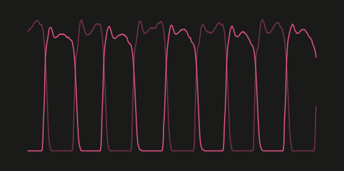
Ground-reaction forces from insoles and force plates; footstep-level records at native rates.
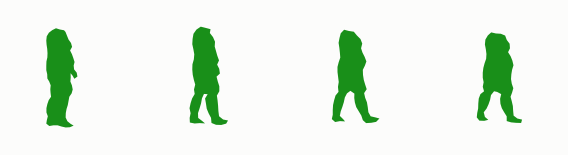
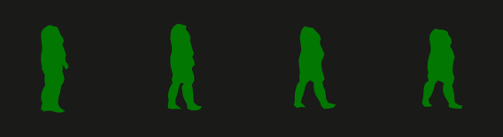
Privacy-preserving 64-point body contours: the publishable face of clinical video.


Find your path#
The master table of all 170 datasets, human and animal lanes side by side: filter, sort, export; access and harmonization badges on every row.
The modalities tour: what each family looks like on real records, and the six lanes beyond the signal. The Taxonomy page defines every cell code and its HPO terms.
executed examples over real corpus data; every page downloads
as .py and .ipynb. Full API reference.
Signal a dataset, host it openly, write the adapter, pass the two gates: license triage and privacy.
Quickstart#
import moveatlas
moveatlas.list_datasets() # the catalogue + access cases
ds = moveatlas.dataset("gait120") # a hosted multimodal dataset
records, meta = ds.get_data(modality="emg") # downloaded from its record, verified
moveatlas.fetch("fog_star") # a recipe: fetched at the origin,
moveatlas.ingest("fog_star") # harmonized on your machine
Two ways in, one catalogue: browse the data first (Corpus statistics, Datasets, Modalities, Taxonomy, the dataset pages), or start from the library (Getting started in three lines, then the User guide for one complete walk per access case, the record format and the subject-level evaluations).
The problem#
Movement-disorders data is scattered across dozens of repositories in incompatible formats, behind licenses ranging from CC0 to retracted tombstones; published pipelines are validated on single small cohorts with splits that leak patients between train and test. Nobody can say what generalizes. Our access-barriers casebook documents, with evidence, how often “open” data is not practically open.
The solution#
One package, one canonical contract per modality, fixed patient-level evaluations, and honest access machinery: hosted datasets download in one call from MoveAtlas’s own verified records; recipe datasets fetch from their original home through our ingestion code; barriers raise their documented route instead of pretending. Benchmarks combine evidence across datasets by meta-analysis.
Data provenance#
Every dataset keeps its identity, license text and citation trail; the catalogue draws from the open repositories of the field.
Core team#
MoveAtlas is founded and owned by Xavier Vasques. Contributions are credited in the release notes and, from the public launch, in the versioned software citation.
Contributors#
The contributor mosaic appears here at the public launch; until then, see the release notes for per-change credit.
Acknowledgements#
MoveAtlas’s design gratefully follows MOABB (NeuroTechX), the reproducibility framework for BCI, as its explicit model.
Citation#
The MoveAtlas resource paper is in preparation. Until then, cite the individual dataset papers listed on each data card; see Citation.
Disclaimer and contact#
MoveAtlas is an open-science project that will evolve with the needs of its community. Nothing on this site redistributes data whose licence forbids it; access cases are enforced in the package itself. Contact: the repository’s issue tracker (public launch) or the owner directly until then.